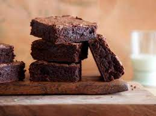

Mocha Cookie Bars

These chocolately cookiebars are somewhat a cross between a brownie and a cookie
Ingredients
- 1 tablespoon instant espresso powder
- 1 tablespoon stron brewed cofee
- 1 cup all-purpose flour
- ½ cup unsweetened cocoa powder
- ½ teaspoon cream of tartar
Steps
- Preheat the oven to 350 degrees F (175 degrees C). Line an 8x8-inch square pan with enough parchment paper to have overhang on all sides.
- Stir espresso powder and coffee together in a small bowl until espresso powder is completely dissolved.
- Whisk flour, cocoa, cream of tartar, baking soda, salt, and 1/4 teaspoon cinnamon together in a bowl; set aside.
- Allow cookies to cool in the pan for 10 minutes. Use the overhanging parchment to lift cookies out to a wire rack; cool completely before cutting into bars.
Go to homepage